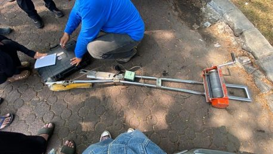

Hydro-Environmental System Lab
Berilmu·Bermanfaat·Berdampak
Laboratorium riset hidrologi, sumber daya air, dan sistem lingkungan di Universitas Pertamina. Untuk data pemantauan hujan, banjir, debit, dan kekeringan secara near real-time, kunjungi HESLab Portal.
Artikel Terbaru
 Kejadian banjir
Kejadian banjir
Banjir Kota Bengkulu, 17 November 2026: hujan semalam suntuk, bukan satu hujan ekstrem
Banjir merendam enam kecamatan Kota Bengkulu pada Selasa 17 November 2026. Menurut GSMaP, hujan Senin malam sampai Selasa siang berjumlah 40 sampai 78 mm, turun tanpa jeda lebih dari 15 jam dan ditutup hujan deras pada pagi hari. Hujan terlebat malam itu jatuh di pedalaman utara, di perbatasan Lebong dan Bengkulu Utara.
Baca → Hujan harian
Hujan harian
Hujan harian Indonesia, 19 November 2026: hujan lebat dini hari di Sumatera bagian tengah, produk satelit tidak sepakat
Menurut GSMaP NRT, 14 kabupaten/kota di Sumatera Utara, Jambi, dan Riau mendapat hujan lebih dari 50 mm pada malam 18–19 November 2026, hampir seluruhnya dalam tiga jam dini hari. GSMaP NOW hampir tidak mencatat hujan itu. Kota Jambi diguyur hujan lebat sejak dini hari, tetapi titik langganan banjir di Kenali tetap kering.
Baca → Kejadian banjir
Kejadian banjir
Hujan dan banjir di Kota Pontianak 2014-2026: apa yang terbaca satelit dan pos hujan
Tujuh banjir Pontianak dibaca dengan arsip GSMaP sejak 1998. Pada tiga banjir yang punya angka pos, hujannya 101 sampai 154 mm sehari, di atas 80 mm yang menurut BMKG sering memicu banjir. Satelit menangkap waktu hujan dengan baik, tetapi sering mencatat besarnya jauh lebih kecil, dan pasang Kapuas ikut memperparah sedikitnya dua banjir.
Baca →Kegiatan Terbaru

Survei Debit Sungai
Survei debit sesaat dilakukan sebagai bagian dari penelitian DIKTI -Integrasi Data Satelit, Pemodelan Hidrologi, dan Machine Learning untuk Peringatan Dini Banjir JABODETABEK-. Data yang diperoleh dimanfaatkan untuk kalibrasi model hujan-limpasan dan peningkatan keandalan prediksi banjir.